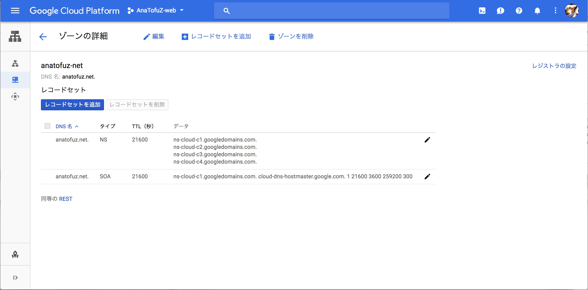
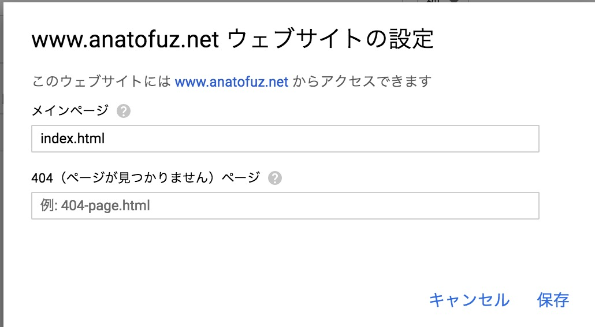

雰囲気で構築するオレオレwebサイト |
|
AnaTofuZ
GCPUG
|
意思決定した結果をwebサイトに公開するぞ!!!


いやまてよ……
AppEngine高いな…?
そういえばA◯SではS3で静的サイトがホスティングできたな…???

www.anatofuz.net で作成anaofuz.net でバケット作ると死ぬぞ!!!!気をつけろ!!!!www.anatofuz.net で強い意志を持ってバケットを作るanatofuz.netにアクセスするとリダイレクトされる
anatofuz.net のバケットも作成している
c.storage.googleapis.com. をCNAMEのエイリアスに設定するgsutil を使う
gsutil rsync -R public gs://anatofuz.net
gsutil iam ch allUsers:objectViewer gs://www-anatofuz-net
